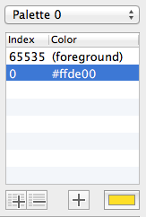
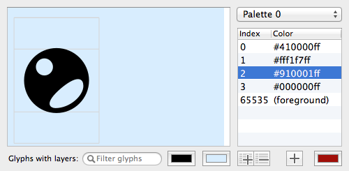

Add separate glyphs, one for each color, for each base glyph that will be replaced by a color glyph.
Regarding glyph names, it’s most convenient to keep the base name the same for all layer glyphs, and add a suffix counting up from the bottom to the top layer.
You can find an example UFO on our GitHub account.
In this example, the base glyph is called circle, and the layer glyphs are called circle.layer00 for the bottom layer, etc. until circle.layer03 for the top layer.
The base glyph will act as a fallback glyph in the SVG and COLR/CPAL formats. It can be a pure black-and-white representation of the color glyph, or something completely different, like a line art version.
For example, in a font containing national flags, the fallback glyph may not display a black-and-white flag, but the 3-letter country code instead.
If you already have figured out which colors you need, you can add them all to the palette now. It will save you some editing later.
Start RoboChrome (we guess you know how, because otherwise how would you have found this tutorial?) and you will see something like this:
If you are playing along with our demo font, remove all existing color data from it by pressing the Settings... and Reset buttons. Hit the Settings... button again to make those confusing details disappear for now.
The color index 65535 is reserved for the foreground color and is always present in the color list.
Click the ➕ button below the color list, next to the black color chooser. This will add a color with the index number 0 and the color value #ffde00 to the list. You guessed it, it’s the FontShop yellow.

Click once on the new color entry you just added to the list. The color chooser below the list will preview the selected color. Click on the color chooser to change the color visually, or enter the hexadecimal color value directly in the color list by clicking on it once again.
You can change a color’s opacity in the color chooser, or by adding a fourth value to the hexadecimal color representation, e. g. #ffde0080 for 50% opacity.
Add and edit all the colors you need for your glyph.

If your color glyph will have white parts, you can check if something is really white or merely transparent by changing the preview area background color.
Change the background by clicking on the right color chooser below the preview area. The left color chooser changes the preview foreground color, which you can use in your glyph by assigning color index 65535 to a layer.
If you have added too many colors, you can delete a color by selecting it in the color list and pressing the backspace key. All colors in the list will be added to the font, RoboChrome doesn’t check if they are really used anywhere. So getting rid of unused colors will keep your file size down (a tiny bit).
Now comes the part you have been waiting for.
Layers are added to the selected glyph in the base glyph list by pressing the ➕ button below the (now still empty) layer list.
You can edit the name and color index of a layer glyph in the list manually, but it’s easier to select the layer glyph and color before adding it to the current base glyph.
To do so, select the layer glyph in the current Font Window. Come back to RoboChrome and select the color in the color list. Then press the ➕ button to add the layer to the base glyph.
This is a crucial point, so have a look at the video:
The base glyph disappears from the preview, which shows the first color layer glyph now.
Add the other layer glyphs by selecting them in the Font Window, selecting the desired color, and pressing the ➕ button.
Your RoboChrome window should now look something like this:
Voilá, you have built your first color glyph!
Open the Settings drawer by clicking on the Settings... button.
To test your first font, since you’re on a Mac, it’s easiest to generate the sbix color format. Uncheck the other formats. Reduce the bitmap sizes to one size, for example 64 pixels, because they take a long time to rasterize, and I guess you want to finish this tutorial quickly now.
Generate your font via RoboFont as usual. For the sbix format you need to generate a TTF, it won’t work with OTFs.
If you click the Export to font button now, RoboChrome will know where to look for the TTF you just generated, and will save a copy with a _sbix suffix.
Open this font in Font Book or QuickLook and you should see your glyph in vibrant RGB!